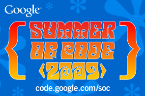

Pardus in Google Summer of Code AgainPardus project, in active development by the TÜBİTAK/UEKAE since 2004, is once again one of the participants of the Google Summer of Code project this year. Among the 150 consultant organizations out of approximately 400 applicants, Pardus is yet again the only Turkish software project in GSoC as it was last year. GSoC's main purposes are to allow young developers improve their knowledge and abilities and at the same time attract them to open source projects. The project is being held every summer since 2005 and is a prestigious event for both the applicant organizations and the young developers. Students' applications to the participant projects have started in March 23rd and will be concluded as of April 3rd. Afterwards, consultant bodies will evaluate the applications and students will be paired with their consultant persons by mid-April. Students will begin working on GSoC projects on May 23rd and will have a probably compelling yet very enjoyable time writing code for the projects they are assigned to until the end of August. More information on GSoC 2009 can be obtained here, and Pardus's GSoC ideas are here. Good luck to all the students for GSoC Pardus projects. |
|
Information and documents on Pardus web pages can be used freely anywhere with original source credit.
For information and suggestion(s) please write to info_at_pardus.org.tr
TÜBİTAK - UEKAE, PK.74 41470, Gebze / Kocaeli.